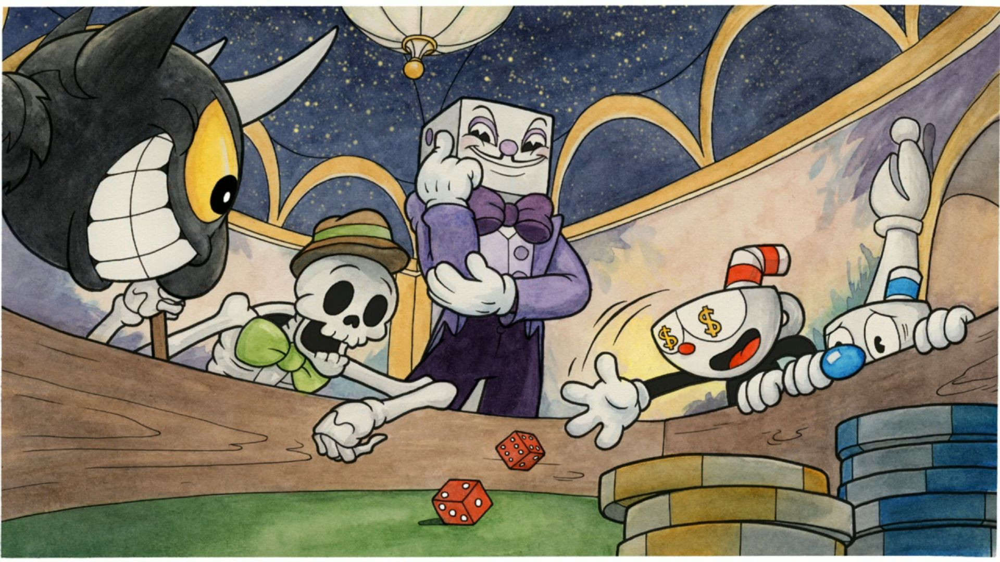
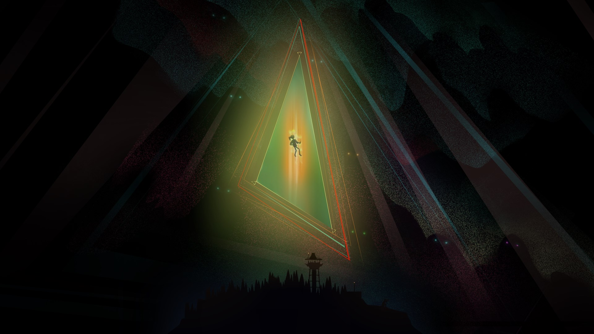

ЧТО ПРЕДСТАВЛЯЕТ СОБОЙ UNITY?
Unity - больше, чем движок, это среда для разработки компьютерных игр, в которой объединены различные программные средства, используемые при создании ПО – текстовый редактор, компилятор, отладчик и так далее. При этом, благодаря удобству использования, Unity делает создание игр максимально простым и комфортным, а мультиплатформенность движка позволяет игроделам охватить как можно большее количество игровых платформ и операционных систем.
Чем хорош Unity?
- Многоплатформенность: Unity поддерживает разработку для множества платформ, включая ПК, мобильные устройства (iOS и Android), консоли (PlayStation, Xbox и другие), виртуальную реальность и многое другое. Это означает, что разработчики могут создавать приложения для разных устройств, используя один и тот же код и ресурсы.
- Силовой движок: Unity предоставляет мощный движок для разработки игр, включая возможности работы с 2D и 3D графикой, физикой, анимацией, искусственным интеллектом и многими другими аспектами разработки игр.
- Широкая поддержка языков программирования: Unity позволяет использовать различные языки программирования, включая C#, JavaScript и Boo, что делает его доступным для разработчиков с разным опытом.
- Большое сообщество и ресурсы: Существует огромное сообщество разработчиков, которые активно делятся опытом и ресурсами, включая бесплатные и платные активы, скрипты и обучающие материалы.
- Кросс-платформенная разработка: Unity упрощает создание игр, которые могут работать на разных устройствах и платформах, что экономит время и ресурсы.
- Визуальный редактор: Unity включает в себя интуитивно понятный визуальный редактор, который позволяет дизайнерам и художникам создавать игровые сцены и анимации без глубоких знаний программирования.
- Обширная библиотека ресурсов: Unity Asset Store предоставляет доступ к огромному количеству готовых активов, инструментов и расширений, которые могут значительно упростить разработку.
- Кросс-платформенное развертывание: Unity обеспечивает удобные средства развертывания игр на различных платформах и в онлайн-магазинах приложений.
- Поддержка виртуальной реальности и дополненной реальности: Unity имеет интеграцию с различными устройствами виртуальной и дополненной реальности, что позволяет разрабатывать VR и AR приложения.
- Обучение и документация: Unity предоставляет множество обучающих материалов, видеоуроков и документации, что облегчает изучение и начало работы с платформой.
Недостатки Unity?
При всех своих достоинствах, движок имеет и свои недостатки. Так, если команда захочет разработать что-нибудь сложнее простого кликера или платформера, то ей придется искать хорошего программиста на C#, который напишет скрипты и компоненты, внедрит их в игру и заставит работать. Из этого вытекает другая проблема движка Unity – медлительность. Создание масштабных, сложных сцен с множеством компонентов может негативно повлиять на производительность игры, в результате чего разработчикам придется потратить дополнительное время и ресурсы на оптимизацию, а возможно – и удаление некоторых элементов из проекта. Кроме того, приложения, созданные на Unity, довольно «тяжеловесны»: даже самая простая пиксельная игра может занимать несколько сотен мегабайт на ПК. Да, для жесткого диска компьютеров это небольшой объем, но, если проект разрабатывается и для мобильных платформ, следует задуматься об оптимизации его размера.
Кому стоит пользоваться Unity?
Исходя из вышеописанного, движок идеально подходит для начинающих разработчиков, которым мало возможностей более простых инструментов, вроде RPG Maker, и которые, в то же время, не хотят тратиться на более дорогие и продвинутые движки. Unity позволяет быстро создать объекты, расставить и связать их, создать нехитрую сцену, задействовать собственный контент и содержимое магазина ассетов. Так как движок имеет огромную аудиторию пользователей, найти решение любой проблемы не составит труда – комьюнити и разработчики с радостью помогут начинающему игроделу с возникающими вопросами, а официальные и пользовательские блоги и обучающие курсы (в том числе на русском языке) дадут все необходимые знания.
Игры Unity
Hollow Knight
Это известная метроидвания с красивой 2D-графикой и глубоким игровым процессом.
Cuphead
Игра в стиле анимации 1930-х годов, известная своей сложностью и уникальным визуальным стилем.
Oxenfree
Приключенческая игра с элементами сверхъестественного, известная за свою сюжетную глубину и диалоги.